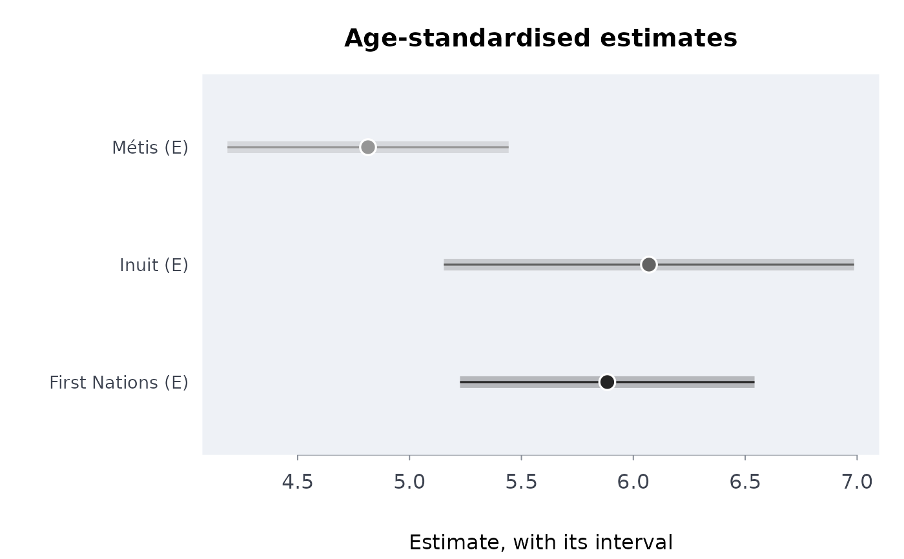

The percentage (or proportion, or rate) a group would have with the age structure of a standard population, from the estimate and published limits in each age group: for comparing First Nations, Metis and Inuit prevalences (suicidal thoughts, mood and anxiety disorders, heavy drinking) with each other and with an older population, for example, when the age pattern of the outcome is steep.
Arguments
- est, lower, upper
Numeric vectors (not column names): the estimate in each age group (and group) and its published limits.
- std
The standard population, one count (or share) per age group.
- grp
Optional labels, one per row: one result per group. Rows are matched to
stdby position, so order each group's rows by age in the order ofstd(sort by an age order, not alphabetically).- qual
Optional quality flags, one per row (a vector; see
qltyrcd).- conflvl
Confidence level of the prevalence intervals (default 0.95).
- scale
The upper bound of the scale: 100 for percentages (the default), 1 for proportions,
Inffor rates.
Value
A data frame of class rmbl_prevalence: group,
estimate, lower, upper, se, usewithcau;
attribute conflvl. plot() draws it.
Details
With estimates \(p_i\), standard errors \(s_i = (u_i - l_i) /
(2z)\) and standard weights \(w_i\) (the standard's shares), the
standardised estimate is \(\sum w_i p_i\) with standard error
\(\sqrt{\sum w_i^2 s_i^2}\), the age groups being disjoint domains of the
survey (treated as independent: see indgap). The interval is
normal, cut at 0 and at scale. A group with a suppressed or missing
age group, or one whose published interval misses its own estimate, has no
standardised value: the age group is not imputed. The standard should be the
age structure of the population compared, or a common one: for First Nations,
Metis and Inuit comparisons, the Indigenous population's own
(cnsstd; Kumar and Tjepkema 2019).
References
Klein RJ, Schoenborn CA (2001). Age adjustment using the 2000 projected U.S. population. Healthy People 2010 Statistical Notes 20. National Center for Health Statistics.
Kumar MB, Tjepkema M (2019). Suicide among First Nations people, Metis and Inuit (2011-2016): findings from the 2011 Canadian Census Health and Environment Cohort (CanCHEC). National Household Survey: Aboriginal Peoples, Statistics Canada catalogue no. 99-011-X2019001.
Examples
# seriously contemplated suicide in the past 12 months, 2017 (table
# 41-10-0021-01), standardised to the Indigenous population's age structure
# (2021 Census)
ages <- c(
"15 to 24 years",
"25 to 34 years",
"35 to 44 years",
"45 to 54 years",
"55 years and over"
)
si <- indiex("suicide")
si <- si[
si$measure == "Seriously contemplated suicide in the past 12 months" &
si$age %in% ages,
]
si <- si[order(si$group, match(si$age, ages)), ]
std <- cnsstd(cnsprof(indiex("censuspop")))
w <- c(
sum(std$population[4:5]),
std$population[6:8],
sum(std$population[9:11])
)
sp <- stdprev(
si$estimate,
si$lower,
si$upper,
std = w,
grp = si$group,
qual = si$quality
)
sp
#> ╭── Age-standardised prevalence ──────────────────────────────────────────────╮
#> │ Groups 3 │
#> │ Method direct standardisation to the standard population given │
#> │ │
#> │ group estimate 95% CI se │
#> │ --------------- -------- -------------- ------ │
#> │ First Nations * 5.884 [5.225, 6.542] 0.3358 │
#> │ Inuit * 6.070 [5.153, 6.987] 0.4677 │
#> │ Métis * 4.815 [4.186, 5.443] 0.3206 │
#> │ │
#> │ Highest prevalence: Inuit * (6.07); lowest: Métis * (4.815). │
#> │ Their intervals overlap, which alone does not mean they are the same: │
#> │ the difference has its own, narrower interval (svycmp() for survey │
#> │ domains). │
#> │ │
#> │ Each group's prevalence as if it had the standard population's ages, │
#> │ so the groups compare without their age structures. │
#> │ Compare only rates standardised to the same population. │
#> │ * use with caution: the source flags the estimate (E, high sampling │
#> │ variability). │
#> ╰─────────────────────────────────────────────────────────────────────────────╯
plot(sp)

# your own numbers: made-up percentages in three age groups for two groups,
# standardised to a population of 500, 300 and 200 in those age groups
stdprev(
est = c(12, 9, 6, 8, 6, 4),
lower = c(9, 6, 3, 7, 5, 3),
upper = c(15, 12, 9, 9, 7, 5),
std = c(500, 300, 200),
grp = rep(c("Nation A", "Everyone else"), each = 3)
)
#> ╭── Age-standardised prevalence ─────────────────────────────────────────╮
#> │ Groups 2 │
#> │ Method direct standardisation to the standard population given │
#> │ │
#> │ group estimate 95% CI se │
#> │ ------------- -------- --------------- ------ │
#> │ Nation A 9.900 [8.051, 11.749] 0.9436 │
#> │ Everyone else 6.600 [5.984, 7.216] 0.3145 │
#> │ │
#> │ Highest prevalence: Nation A (9.9); lowest: Everyone else (6.6). │
#> │ Their intervals do not overlap: the gap is more than sampling error. │
#> │ │
#> │ Each group's prevalence as if it had the standard population's ages, │
#> │ so the groups compare without their age structures. │
#> │ Compare only rates standardised to the same population. │
#> ╰────────────────────────────────────────────────────────────────────────╯